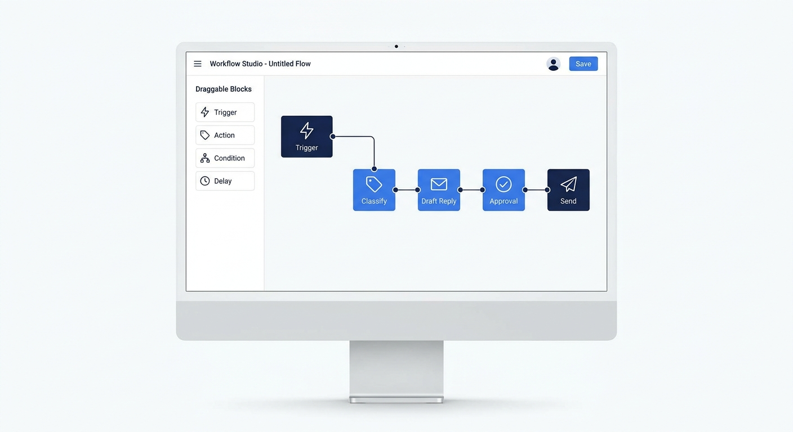
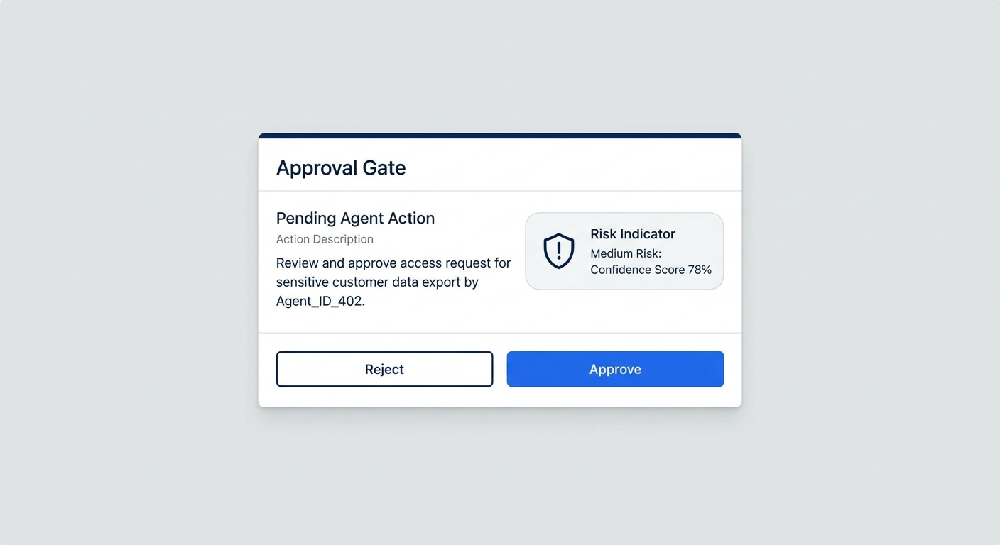
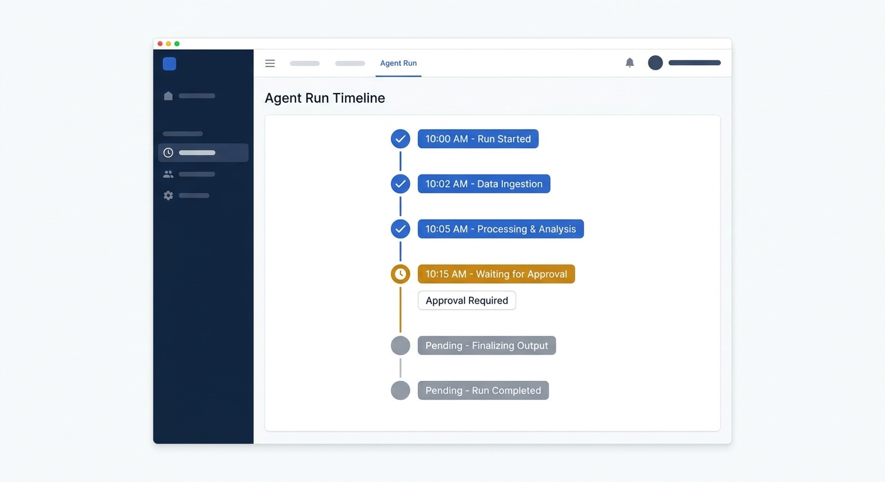
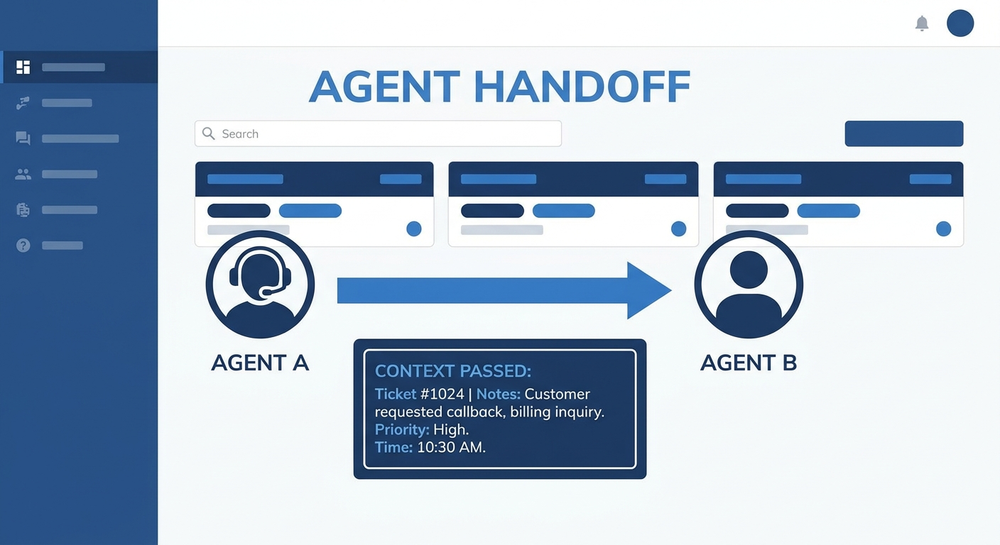

Everything you need to run agents you can trust
From building a workflow to reviewing what an agent actually did — Arcus covers the whole lifecycle.

Describe it once, refine it forever
Start from plain language, a template, or an existing process doc. Arcus drafts the steps, and you adjust logic, branches, and tool calls in a visual editor.
- Plain-language workflow drafting with instant step breakdown
- Conditional branches, retries, and fallback paths
- Version history so you can roll back any change
Autonomy where you want it, sign-off where you need it
Define exactly which actions require human approval — by dollar amount, customer tier, action type, or confidence score.
- Rule-based approval gates on any step
- Approvals via Slack, email, or the Arcus inbox
- Automatic pause and escalation on low-confidence decisions


A complete, searchable record of every run
Every action an agent takes is logged with inputs, outputs, and reasoning — filterable by status, tool, and date so audits take minutes, not days.
- Step-by-step replay for any historical run
- Exportable audit logs for compliance reviews
- Retention from 7 days to 1 year depending on plan
Let specialized agents pass work to each other
Chain agents together so a triage agent can hand a complex case to a specialist agent — with full context carried over automatically.
- Context-preserving handoffs between agents
- Team-level agent libraries you can reuse across workflows
- Available on Growth and Enterprise plans

Know exactly how much time and money agents are saving
See hours saved per agent, per team, and per week, benchmarked against manual handling time.
Track agent confidence and human-override rates over time to know when it's safe to expand autonomy.
Export weekly and monthly summaries as CSV or share a live dashboard link with stakeholders.
See these features on your own workflow
Start free and build your first agent today.